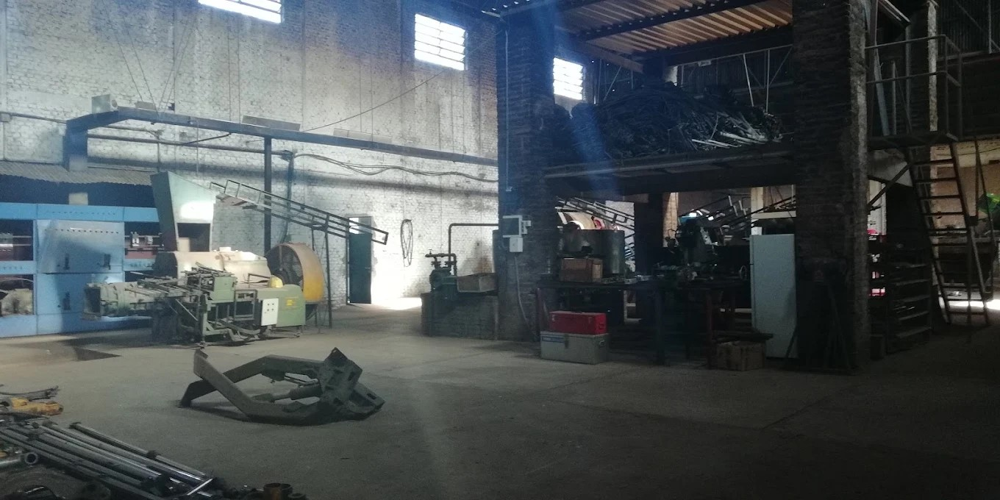
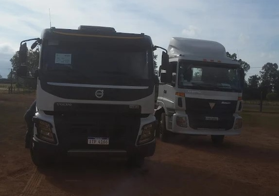
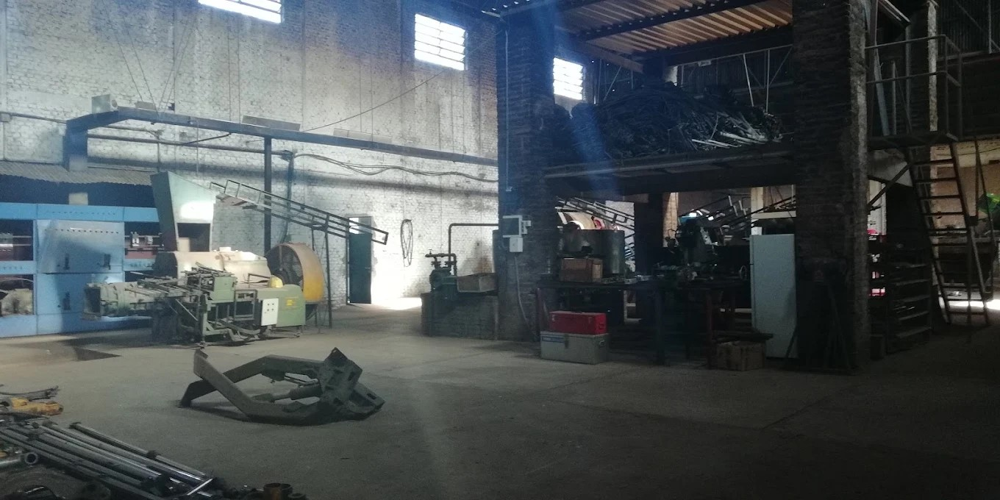
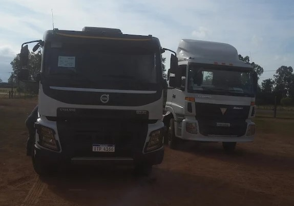

Inicio
En Oscar Kolbasiuk S.A.S., contamos con los Galpones de Oscar Kolbasiuk, ubicados a las afueras de la ciudad de Paysandú, en el camino a San Félix, entre las calles Don Martín Etchebarne y Proyectada 86.
Fundamos nuestra empresa en 1986, cuando Oscar Kolbasiuk, junto a sus hijos Román, Willy y Eloy, dio inicio a un proyecto familiar dedicado a la cosecha de remolacha azucarera para la empresa Azucarlito. Con el tiempo, crecimos y nos consolidamos como una corporación con presencia en diversos puntos del país.
Nuestras Áreas Principales
- Forestal, que constituye su actividad principal.
- Transporte de carga.
- Ganadería, agricultura y horticultura * áreas complementarias que fortalecen nuestra operación. .
Contamos con un taller propio, donde realizamos reparaciones de maquinaria y brindamos servicios mecánicos y metalúrgicos. Actualmente, nuestra corporación emplea a más de 500 personas, entre personal directo e indirecto, y posee más de 35 años de trayectoria en el sector. Ofrecemos servicios especializados en siembra, reforestación y administración de plantaciones, manteniendo el compromiso y la calidad que nos caracterizan.
 



Herrería
Realizamos trabajos de herrería y metalúrgica en general, incluyendo mantenimiento y reparaciones de maquinaria de gran porte.
Contamos con equipamiento de alta tecnología al servicio de la maquinaria pesada de transporte, agrícola, vial o forestal. Nuestras amplias instalaciones, en conjunto con un destacado equipo especializado de trabajo, garantizan los más altos estándares de calidad con menores tiempos de espera.
Esto se traduce en menos pérdidas de trabajo por parada técnica de las herramientas.
Tornería
Realizamos trabajos de tornería y ajuste con tornos y fresadoras de gran porte para maquinaria pesada.
Estos servicios están dirigidos tanto para el transporte, vial, forestal o agrícola, asegurando precisión y eficiencia en cada intervención.
Gomería
Ofrecemos servicio de gomería especializado en neumáticos de gran porte tanto para el transporte, vial, forestal y agrícola.
- Servicio de recapado y recauchutaje.
- Reparaciones de llantas, cámaras y cubiertas.
Mecánica
Brindamos servicio de reparación y mantenimiento integral para todo tipo de vehículos y maquinaria en general.
- Trabajos en electricidad, mecánica, chapa y pintura.
- Contamos con elevadores, escáneres y bancos de pruebas.
Nuestras amplias instalaciones nos posibilitan una dinámica de trabajo fluida y eficiente con una mínima parada técnica del equipo.
Contacto
Dirección: MW33+RJ8, Unnamed Road, 60000 San Félix, Departamento de Paysandú
Teléfono: 47248304
Email: contacto@oskolbasiuk.com
Página principal: https://www.kolbasiuk.com.uy